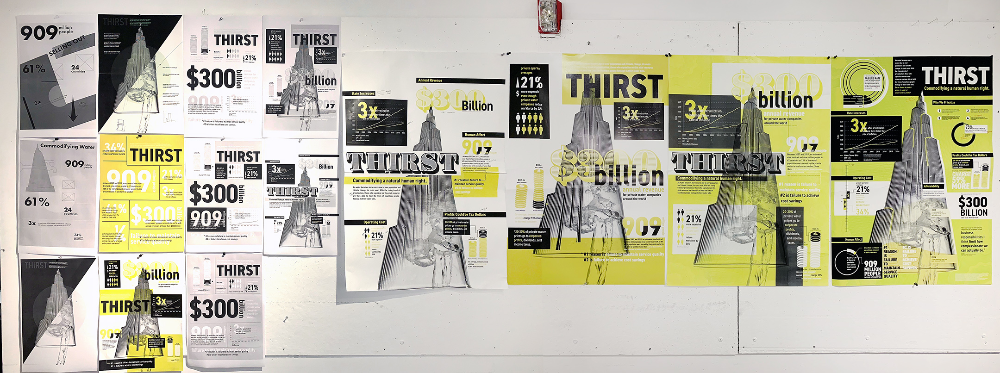
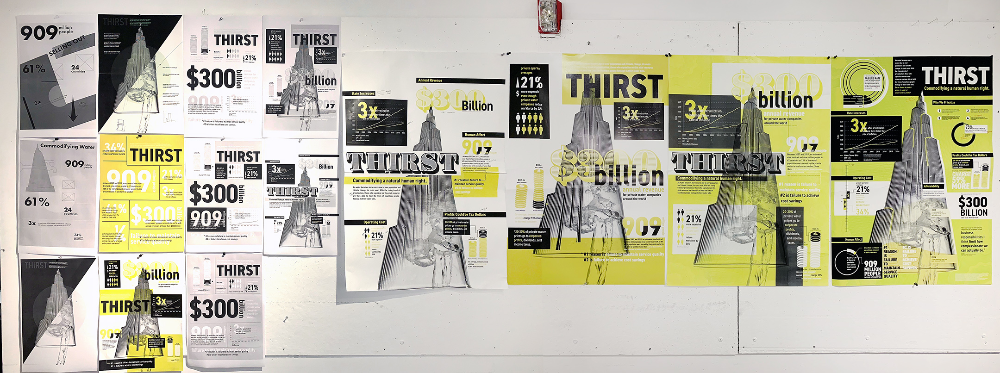

This infographic introduces the facts of water commodification, focussed in the United States. It is presented as more of an editorial cover than traditional infographic, with the end goal to draw people into the facts and rile them up about the true state of our shared resources.

 
